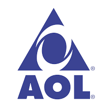

Aol
Authored By: Denis Smirnov
America Online, or Aol for short, started off as the biggest website in 1996 with 90 million monthly views. Aol get’s overtaken by Yahoo, in april 2001, as the biggest site on the internet. Aol peaks at just over 2 billion page views a month, in February 2004, before hitting a plateau for the next few years. Aol get’s over taken by google, in march 2005, becoming the third most visited site on the internet. Aol fell off the leaderboard in june of 2013.

Website Logo